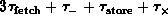
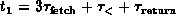

Data Structures and Algorithms
with Object-Oriented Design Patterns in Java
Data Structures and Algorithms
with Object-Oriented Design Patterns in JavaIn this section we analyze the performance of a recursive algorithm which computes the factorial of a number. Recall that the factorial of a non-negative integer n, written n!, is defined as
However, we can also define factorial recursively as follows
It is this latter definition which leads to the algorithm given
in Program  to compute the factorial of n.
Table gives the running times of each of the
executable statements in Program .
to compute the factorial of n.
Table gives the running times of each of the
executable statements in Program .
Program: Recursive program to compute n!.
| time | ||
|
statement | n=0 | n>0 |
| 5 | ||
| 6 | | -- |
| 8 | -- |  |
Notice that we had to analyze the running time of the two possible outcomes of the conditional test on line 5 separately. Clearly, the running time of the program depends on the result of this test.
Furthermore, the method factorial calls itself recursively on line 8.
Therefore, in order to write down the running time of line 8,
we need to know the running time,  , of factorial.
But this is precisely what we are trying to determine in the first place!
We escape from this catch-22 by assuming that we already know
what is the function
, of factorial.
But this is precisely what we are trying to determine in the first place!
We escape from this catch-22 by assuming that we already know
what is the function  ,
and that we can make use of that function to determine the running time
of line 8.
,
and that we can make use of that function to determine the running time
of line 8.
By summing the columns in Table we get that
the running time of Program is
where  and
 .
This kind of equation is called a
recurrence relation
because the function is defined in terms of itself recursively.
.
This kind of equation is called a
recurrence relation
because the function is defined in terms of itself recursively.
 Copyright © 1998 by Bruno R. Preiss, P.Eng. All rights reserved.
Copyright © 1998 by Bruno R. Preiss, P.Eng. All rights reserved.